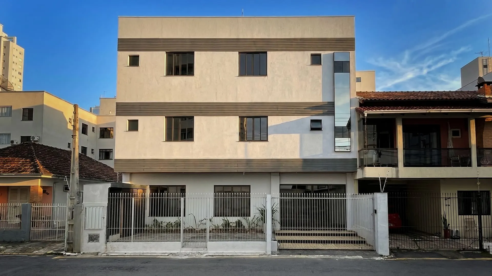
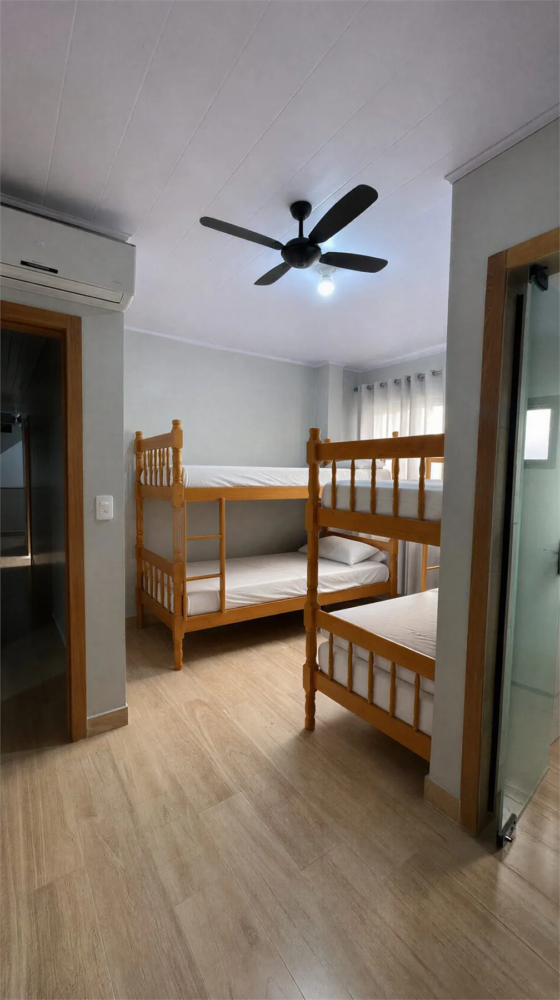
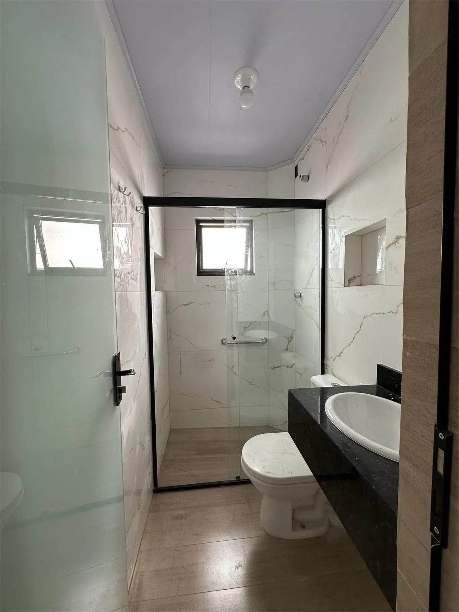
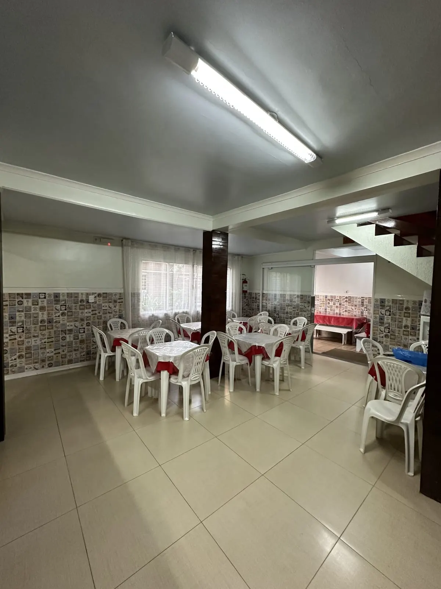

O mercado hoje
e onde a Dona France entra nele
Benchmark de preço, estrutura e infraestrutura da oferta de quartos privativos até 1 km da Praia Central — e as adaptações necessárias para operar no Airbnb sem desmontar o negócio de excursões.
capturados
de busca
profundidade
Dona France
Vale abrir quartos no Airbnb?
de resolver enxoval, limpeza, trancas e Wi-Fi.
O que sustenta cada número deste relatório
Três fontes independentes. Sempre que um número aparecer, ele vem com a origem — e os números sem amostragem declarada estão marcados como estimativa de mercado.
Benchmark de quartos
Varredura do Airbnb no recorte exato do produto: quarto privativo, 2 a 6 hóspedes, até 1 km da Praia Central. Gera preço, infraestrutura e concorrentes. É a espinha dorsal deste relatório.
Leitura macro de BC
Panorama do mercado de temporada da cidade: saturação, sazonalidade, custos e riscos. Qualitativo, sem amostragem declarada — usado como contexto, nunca como número principal.
Operação Dona France
Estrutura, capacidade e modelo comercial das duas casas, conforme material institucional próprio. Confirma — e em alguns pontos corrige — o que os outros dois estudos supõem.
| Recorte | Definição adotada | Recorte | Definição adotada |
|---|---|---|---|
| Geografia | Até 1 km da Praia Central — Barra Norte/Pioneiros, Centro e Barra Sul | Baixa temporada | 24 a 27 de agosto de 2026 |
| Produto | Quarto privativo em casa, apartamento, pousada ou hostel | Temporada regular | 6 a 9 de novembro de 2026 |
| Capacidade | 2 a 6 hóspedes — a mesma faixa dos quartos da Dona France | Alta temporada | 8 a 11 de janeiro de 2027 |
| Excluídos | Itajaí, Itapema, Praia Brava, Taquaras, Estaleiro, Camboriú e imóveis inteiros | Métricas | Preço/noite, preço por hóspede/noite e P25 · mediana · P75 |
A alta temporada paga o ano. A baixa precisa de outro produto.
O mercado de BC é maduro e disputado. O que muda o resultado não é o imóvel — é a operação e o preço certo em cada janela do ano.
+30%
de crescimento na oferta de anúncios no último ano — a concorrência aumentou mais rápido que a demanda.
45% a 51%
de ocupação média anual na cidade. É a régua realista — não os 80% que se imagina.
15% a 25%
cobrado por agências e co-hosts sobre a receita, além de 15% a 20% de taxa de plataforma.
até 40%
do faturamento bruto consumido pela operação: limpeza, lavanderia, energia e taxas.
A sazonalidade, medida no produto dela — quarto para 2 hóspedes
| Janela | Período apurado | Mediana por quarto/noite | Mediana por hóspede/noite | Variação sobre a baixa |
|---|---|---|---|---|
| Baixa | 24 a 27 de agosto | R$ 153 | R$ 77 | — |
| Regular | 6 a 9 de novembro | R$ 187 | R$ 94 | +22% |
| Alta | 8 a 11 de janeiro | R$ 415 | R$ 208 | +171% |
Com quem a Dona France compete — e com quem não compete
A maior parte do que se lê sobre o mercado de Balneário Camboriú fala de apartamento e studio. Nada disso é o produto dela. Saber onde ela não está evita investir para brigar num lugar onde não precisa entrar.
| Formato | Onde se concentra | Quem procura | Dinâmica | Compete com ela? |
|---|---|---|---|---|
| Studio e loft compacto | Centro, Pioneiros, Terceira Avenida | Corporativo, solteiros, nômade digital | Giro rápido, 2 a 4 noites | Não |
| Apartamento de alto padrão | Avenida Atlântica e quadra mar | Famílias numerosas, Mercosul | Ticket alto, vacância no inverno | Não |
| Casa e mansão | Praias agrestes — Estaleiro, Taquaras | Eventos familiares, retiros | Feriados longos, margem alta | Não |
| Quarto privativo | Barra Norte, Centro e Barra Sul | Casais, famílias de 3–4, grupos de 5–6 | Preço por quarto, giro constante | Sim — é aqui |
| Casa inteira para grupo | Centro | Excursões, igrejas, formaturas | Reserva por grupo, casa fechada | Já é dela |
Preço por capacidade e temporada
Quarto privativo até 1 km da Praia Central. n é o número de observações que sustentam cada linha — quanto menor o n, menos confiável a mediana e mais se deve trabalhar com faixa.
| Temporada | Capacidade | n | P25 | Mediana | P75 | Mediana p/ hóspede |
|---|---|---|---|---|---|---|
| Baixa | 2 hóspedes | 35 | R$ 133 | R$ 153 | R$ 220 | R$ 77 |
| 3–4 hóspedes | 10 | R$ 244 | R$ 315 | R$ 567 | R$ 79 | |
| 5–6 hóspedes | 5 | R$ 292 | R$ 300 | R$ 383 | R$ 50 | |
| Regular | 2 hóspedes | 16 | R$ 156 | R$ 187 | R$ 261 | R$ 94 |
| 3–4 hóspedes | 10 | R$ 337 | R$ 377 | R$ 436 | R$ 94 | |
| 5–6 hóspedes | 6 | R$ 344 | R$ 511 | R$ 641 | R$ 85 | |
| Alta | 2 hóspedes | 14 | R$ 329 | R$ 415 | R$ 514 | R$ 208 |
| 3–4 hóspedes | 13 | R$ 542 | R$ 657 | R$ 905 | R$ 164 | |
| 5–6 hóspedes | 8 | R$ 323 | R$ 357 | R$ 896 | R$ 59 |
Frequência de cada item nos 17 anúncios auditados
Itens confirmados apenas quando declarados no anúncio. A coluna da direita mostra a situação da Dona France hoje — verde onde já tem, vermelho onde falta.
Concorrentes reais, preço de baixa temporada
Amostra dos anúncios auditados que exibiram preço para a capacidade analisada. Note as notas: a régua de avaliação do segmento está em 4,9.
| Anúncio | Cap. | Proximidade | Setor | R$/noite | Nota | Banheiro | Cozinha |
|---|---|---|---|---|---|---|---|
| I10 Suíte térrea, 500 m da praia | 2 | 500 m | — | R$ 110 | 4,91 · 34 | Privativo | Copa sem fogão |
| Quarto pé na areia, 50 m | 2 | 50 m | — | R$ 142 | 4,94 · 33 | Compartilhado | Refeições rápidas |
| Suíte 2 com café da manhã | 2 | 2 min a pé | — | R$ 144 | 4,97 · 29 | Privativo | Compartilhada |
| Quarto a 5 min da praia | 2 | ≈ 300 m | Sul | R$ 186 | 4,90 · 96 | Compartilhado | Compartilhada |
| Quarto no AP da Ana | 2 | 400–500 m | Central | R$ 198 | 4,99 · 291 | Privativo | Compartilhada |
| Suíte privativa frente-mar | 2 | Frente-mar | Central | R$ 248 | 4,99 · 91 | Privativo | Completa |
| Suíte 250 m + hidro + ar | 2 | 250 m | Central | R$ 267 | Novo | Privativo | Não informada |
| Suíte privativa em pousada | 6–8 | Provável | Central | R$ 209 | Novo | Privativo | Compartilhada |
| 2 quartos próximos à Roda Gigante | 4 | Costeira | Norte | R$ 290 | 5,00 · 5 | Demissuíte | Compartilhada |
| Pousada Claudia | 6 | Provável | — | R$ 639 | — | Não informado | Compartilhada |
Quarto para até 8 hóspedes, a 200 m
Tem teclado numérico, cozinha completa, aceita pets, câmera externa e quarto grande com beliches. Não oferece enxoval. É o produto mais próximo do formato de grupo — e mostra exatamente onde a Dona France ganha: padronização.
Pousada Claudia
A avaliação visível reclamava de banho, papel higiênico, lençol e limpeza. Nenhuma reclamação era sobre falta de comodidade sofisticada. O básico pesa mais na nota do que a quantidade de itens do anúncio.
Os temas que o hóspede realmente comenta
Frequência de cada tema nas avaliações dos anúncios auditados. Os cinco primeiros são todos operação e localização — nenhum é luxo.
Os cinco problemas — e o maior deles não é dela
e a Dona France simplesmente não o corre.
Os riscos que são dela — e que o panorama de mercado não cobre
Não correr o risco condominial não significa não ter risco. Operar 11 quartos como hospedagem tem exigências próprias, e três delas são anteriores à publicação do anúncio.
Segurança contra incêndio
Projeto, licenciamento e equipamentos conforme CBMSC e o uso real da edificação: rotas, iluminação, sinalização, extintores, detectores e lotação. Sensor avulso e câmera não substituem projeto técnico.
Uso e cadastro
Consultar o município sobre ocupação e alteração de uso. Validar Cadastur e FNRH. Formalizar regras de visitantes, silêncio, menores, pets, acesso e uso da cozinha.
Câmeras internas
O Airbnb proíbe câmera em qualquer espaço interno, inclusive áreas comuns de anúncios de quarto privativo — mesmo desligadas. Só câmeras externas, em áreas permitidas e declaradas, são aceitas.
Canibalizar a excursão
Vender 3 quartos numa data pode inviabilizar uma excursão inteira de 25 a 46 pessoas naquela mesma data. Sem janela de liberação e calendários vinculados, o quarto compete com o próprio negócio.
O perfil começa do zero
Vinte e três anos e mais de 650 grupos hospedados não transferem para o Airbnb. O anúncio novo entra sem avaliação, competindo com concorrentes de nota 4,99 e 291 avaliações.
Avaliações dos primeiros giros
As primeiras dez reservas definem a reputação do anúncio. Uma falha de limpeza ou de enxoval no início custa muito mais caro do que custaria depois de trinta avaliações positivas.
O que a Dona France já tem

Fachada
Quarto de grupo
Banheiro privativo
Refeitório| Dimensão | Casa 01 | Casa 02 | Situação para o Airbnb |
|---|---|---|---|
| Quartos | 16 quartos · até 60 hóspedes · 320 m² | 11 quartos · até 46 hóspedes · 280 m² | 27 quartos e 106 hóspedes no total |
| Capacidade por quarto | De 2 a 6 pessoas | De 2 a 6 pessoas | Cobre exatamente a faixa pesquisada |
| Dentro do quarto | Ar-condicionado, ventilador, frigobar, TV | Ar-condicionado, ventilador, frigobar, TV | Acima da média do mercado |
| Banheiro | Privativo | Privativo | 100% contra 59% do mercado |
| Áreas comuns | Cozinha industrial, refeitório, churrasqueira | Cozinha industrial, refeitório, churrasqueira | Vira cozinha compartilhada com regras |
| Modelo comercial | Casa fechada · mínimo de 25 pessoas · mínimo de 2 diárias · WhatsApp, contrato e transferência | Precisa mudar por completo | |
| Roupa de cama | Não fornecida — lençol, cobertor e travesseiro são do grupo | Lacuna nº 1 para o Airbnb | |
| Estacionamento | Apenas carga e descarga em frente às casas | Precisa de parceria próxima | |
| Localização | Centro, a aproximadamente 300 m da Praia Central | Argumento comercial forte | |
Onde ela ganha e onde ela perde
Comparação item a item contra os 17 anúncios auditados. Todas as vantagens da coluna da esquerda já existem hoje e não exigem investimento para serem ativadas.
Onde ela ganha — sem investir nada
Onde ela perde — e o que custa corrigir
Cinco tendências — e uma que não vale o investimento
Profissionalização hoteleira
O hóspede de BC passou a esperar padrão de hotel: enxoval branco de alta gramatura, toalhas pesadas, cama bem montada. Móvel velho e decoração improvisada resultam em quarto vazio.
Precificação dinâmica
Preço fixo deixa dinheiro na mesa no verão e gera vacância no inverno. O padrão do mercado migrou para preço variável por data, evento e antecedência.
Locação flexível por estação
Diária no verão, média temporada no inverno. É a resposta direta ao inverno de caixa — desenvolvida no próximo slide.
Pet friendly com taxa
Aceitar animais de pequeno porte aumenta as visualizações de forma relevante. A regra é cobrar taxa que cubra a limpeza mais pesada e restringir a quartos ou setores definidos.
Kit de boas-vindas
Cápsulas de café, água, chá e um mimo local custam pouco por reserva e têm efeito desproporcional na nota. É o melhor retorno por real investido em avaliação.
Fechadura digital por quarto
Aparece como “essencial” na leitura de mercado, mas o benchmark mostra 1 anúncio em 17 declarando teclado numérico. Não é requisito. Priorize a entrada externa e trancas confiáveis nos quartos — e adie de R$ 5 a 10 mil.
O mercado está cheio de quarto para casal
e vazio de quarto bom para grupo
O calendário em dois regimes
A baixa temporada do quarto coincide com a baixa temporada da excursão. Em vez de disputar diária em um mercado sem demanda, a recomendação é trocar de produto nessa janela.
Novembro a março — regime de diária
Abril a outubro — regime de média temporada
Três modelos possíveis, um recomendado
| Modelo | Receita | Complexidade | Risco principal | Decisão |
|---|---|---|---|---|
| Excursões e casa inteira | Concentrada por grupo | Baixa | Ociosidade entre grupos | Manter como base |
| Quartos individuais na Casa 02 | Diversifica e monetiza datas órfãs | Média | Operação e avaliações iniciais | Recomendado |
| Operação híbrida nas duas casas | Maior teto potencial | Alta | Overbooking, ruído e canibalização | Somente após o piloto |
O desenho do piloto na Casa 02
Menor risco
É a casa nova, com 11 quartos e 46 hóspedes — inventário menor, aprendizado operacional mais barato e menor chance de canibalizar excursão grande.
3 a 5, no início
Um anúncio por quarto físico, com capacidades diferentes entre si. Escalar até 11 apenas depois de 30 dias de dados e no mínimo 10 reservas medidas.
Excursão em primeiro lugar
A Casa 01 continua focada em grupos. Só datas órfãs, com antecedência definida, são liberadas — preservando o motor atual de até 60 hóspedes.
Calendários vinculados
Nunca vender reserva simultânea sobre o mesmo estoque. Vincular o calendário da casa inteira ao dos quartos e definir janela de liberação de 30 a 45 dias.
Mix de produto e faixa inicial por quarto/noite
Os quartos das duas casas vão de 2 a 6 pessoas — as três faixas de capacidade da pesquisa já existem no estoque dela. O piloto leva uma de cada e testa os três preços ao mesmo tempo.
| Capacidade | Baixa temporada | Temporada regular | Alta temporada | Posicionamento recomendado |
|---|---|---|---|---|
| 1 a 2 hóspedes | R$ 150–190 | R$ 190–240 | R$ 390–520 | Próximo da mediana, com prêmio pelo banheiro privativo |
| 3 a 4 hóspedes | R$ 300–380 | R$ 360–450 | R$ 650–850 | Economia familiar frente à compra de dois quartos |
| 5 a 6 hóspedes | R$ 360–450 | R$ 500–650 | R$ 800–1.100 | Trabalhar em faixa — amostra pequena e heterogênea |
Preço-base para 2
O preço-base cobre ocupação de 2 hóspedes e precisa pagar quarto, enxoval, limpeza e o custo fixo do giro. Do 3º ao 6º hóspede, adicional progressivo.
Estadia mínima
Duas noites na baixa e na regular. De 3 a 5 noites na alta e em datas de evento, para reduzir o número de giros no período mais caro de operar.
Datas órfãs
Liberar 1 noite apenas perto do check-in e quando a margem compensar o giro. Fora disso, uma noite solta custa mais em limpeza do que traz em receita.
Desconto de lançamento
Limitado às primeiras reservas, para gerar avaliação. Nunca posicionar o produto permanentemente como o mais barato da região.
O que precisa mudar — por impacto e esforço
A ordem não é negociável: nenhum item da fase 2 compensa a falta de um item da fase 1. Um quarto sem enxoval com fechadura digital continua sendo um quarto sem enxoval.
O que não pode faltar
- Enxoval completo — lençóis, fronhas, toalhas e protetores, com três pares operacionais por cama
- Limpeza como serviço — checklist por quarto, inspeção e reposição padronizada
- Trancas — por dentro e por fora, chave ou código exclusivo; depósito, rouparia e quadros trancados
- Wi-Fi — avaliação técnica, cobertura nos quartos e velocidade medida e publicada
- Banho — água quente e pressão testadas em cada quarto
- Fotos reais — configuração das camas, o que é privativo e o que é compartilhado
Conversão e avaliação
- Anúncio por capacidade — um anúncio por quarto, com as camas explicadas
- Kit de copa — bandeja, copos, pratos, talheres, abridor e chaleira, aproveitando o frigobar existente
- Conforto — blackout, cabides, espelho, tomada junto à cama, mesa e luminária de leitura
- Identificação — numeração dos quartos, sinalização e guia digital por QR
- Parceria de estacionamento — acordo com garagem próxima
- Cozinha compartilhada — regras, inventário e nicho de alimentos por quarto
Pode esperar
- Fechadura digital nos 11 quartos — apenas após validar portas, baterias, códigos e contingência
- Café da manhã — começar como adicional sob encomenda, nunca como promessa inclusa
- Câmeras externas — somente áreas permitidas e declaradas
- Sistema de gestão (PMS) — avaliar quando o volume justificar
- Serviços pagos — limpeza intermediária, troca extra de enxoval, pet, lavanderia, traslado, early check-in e late checkout
Quanto custa cada caminho
Valores são referências de planejamento, não cotações. Não incluem obras estruturais nem adequações determinadas por projeto técnico de incêndio.
R$ 18 a 35 mil
Soft launch com 3 a 5 quartos. Enxoval para os quartos do piloto, pequenos itens de conforto, fotos, trancas e operação mínima. É o valor para descobrir se o modelo funciona antes de comprometer a casa inteira.
R$ 45 a 80 mil
Casa 02 essencial e pronta para o mercado. Os 11 quartos com enxoval completo, limpeza estruturada, Wi-Fi profissional, trancas, copa, sinalização e anúncios fotografados.
R$ 80 a 140 mil
Casa 02 ampliada. Inclui fechaduras digitais nos 11 quartos, câmeras externas e reforço de conforto e serviços. Só se justifica depois que o piloto comprovar margem.
| Frente de investimento | Referência | Casa 02 ou piloto | Observação |
|---|---|---|---|
| Enxoval para 46 hóspedes | Três pares, toalhas, protetores e reserva | R$ 30–50 mil | Depende do mix de camas — é o maior item isolado |
| Wi-Fi profissional | Cabeamento, pontos de acesso, instalação e testes | R$ 4–10 mil | Por casa. Mesh de varejo não substitui projeto |
| Utensílios e copa | R$ 250 a 600 por quarto mais micro-ondas comuns | R$ 3–7 mil | Os frigobares já existem em todos os quartos |
| Fotos e anúncios | Fotografia, tratamento e textos | R$ 2–5 mil | Um anúncio por unidade ou por tipo de quarto |
| Sinalização e guia | Placas, numeração, QR e regras | R$ 1–3 mil | Identidade operacional simples |
| 11 fechaduras digitais | R$ 450 a 900 instalada por porta | R$ 5–10 mil | Fase 3 — não é requisito de mercado |
| Câmeras externas | 4 a 8 pontos, gravador e instalação | R$ 4–10 mil | Somente áreas externas e declaradas |
| Segurança contra incêndio | Projeto, licenciamento e equipamentos | A orçar | Depende de análise técnica e do CBMSC |
30, 60 e 90 dias — com critério de passagem
Cada etapa tem um portão: só se avança quando o critério é atingido. Isso impede que a operação cresça mais rápido do que a qualidade.
| Prazo | Entregas | Portão de decisão |
|---|---|---|
| 0 a 30 dias | CBMSC, município e Cadastur. Inventário dos quartos. Seleção de 3 a 5 quartos. Enxoval, limpeza, Wi-Fi e trancas. Fotos, regras e calendários vinculados. | Publicar somente após checklist de segurança aprovado e quarto-padrão validado por hospedagem-teste. |
| 31 a 60 dias | Soft launch. Preço por capacidade. Suporte por WhatsApp com prazo de resposta. Auditoria de cada giro. Parceria de estacionamento. Kit de copa e coleta de feedback. | 10 reservas, nota mínima de 4,8, nenhum incidente grave e limpeza entregue no prazo. |
| 61 a 90 dias | Escalar até 11 quartos. Decidir sobre fechaduras digitais. Testar café da manhã como adicional. Otimizar anúncios, fotos e preços. Avaliar sistema de gestão. | Ocupação, diária média e margem incremental justificam a expansão. |
| Após 90 dias | Comparar o lucro por data entre excursão, casa inteira e quartos. Avaliar a extensão do modelo para a Casa 01. | Expandir sem reduzir a margem total nem a reputação já construída. |
O que medir
Visualizações, conversão, diária média, ocupação, antecedência de reserva e cancelamento.
O que medir
Tempo de limpeza, incidentes, controle de chaves, chamados abertos e volume de lavanderia.
O que medir
Nota geral, nota de limpeza, precisão do anúncio, desempenho do Wi-Fi e reclamações.
O que medir
Receita líquida, custo por giro, margem por quarto e comparação direta com a receita de excursão.
O que ficou provado
A estrutura já existe
A Dona France não precisa reinventar as casas. Precisa transformar a estrutura que já tem em confiança percebida pelo hóspede que reserva sozinho pela internet.
O diferencial é gratuito
Banheiro privativo em 27 de 27 quartos, contra 59% do mercado auditado. É a maior vantagem estrutural — e já está paga.
O maior risco não é dela
Proibição condominial, conflito de assembleia e multa de 5 a 10 vezes a cota derrubam investidores de apartamento. Casa própria não corre esse risco.
O básico vem primeiro
Enxoval, limpeza, Wi-Fi e trancas vêm antes de café da manhã, fechadura digital e qualquer tecnologia. É o que aparece nas avaliações.
O nicho está vazio
Quartos de 5 a 6 hóspedes têm de 5 a 8 concorrentes por temporada, com qualidade irregular. Ela já tem esse estoque nas duas casas.
Expandir só com prova
A operação híbrida nas duas casas só deve avançar depois de comprovar margem incremental — não ocupação, não faturamento bruto.
02 Liberar o orçamento da fase 1, entre R$ 18 e 35 mil, para enxoval, limpeza, trancas e Wi-Fi?
03 Definir a janela de liberação das datas sem excursão, entre 30 e 45 dias de antecedência?
Ressalvas metodológicas e fontes
O que este relatório não afirma, e de onde vem cada informação.
Limites desta pesquisa
Fontes consultadas
Cenários ilustrativos e custos recorrentes
Atenção: os cenários abaixo não são previsão de receita. São aritmética simples para dar ordem de grandeza, e excluem taxas, limpeza, lavanderia, energia, pessoal, impostos e bloqueios por excursão.
| Cenário | Quartos ativos | Diária média | Ocupação | Receita bruta mensal | Leitura |
|---|---|---|---|---|---|
| Piloto | 5 | R$ 230 | 40% | R$ 13.800 | Ocupação conservadora, coerente com a média da cidade |
| Casa 02 completa | 11 | R$ 250 | 45% | R$ 37.125 | Cenário central, dentro da faixa de 45% a 51% do mercado |
| Cenário otimista | 11 | R$ 320 | 55% | R$ 58.080 | Exige reputação consolidada e preço dinâmico maduro |
Custos recorrentes para simulação
| Item | Premissa | Como tratar |
|---|---|---|
| Limpeza por giro | R$ 80 a 150 por quarto | Absorver no preço ou cobrar taxa transparente ao hóspede |
| Lavanderia | Medir por quilo e por ocupação | Contrato local com controle de perdas do enxoval |
| Café da manhã simples | Custo de R$ 18 a 30 por pessoa | Venda sugerida de R$ 35 a 55 por pessoa por dia |
| Taxa de plataforma | Varia conforme a estrutura de taxas da conta | Confirmar a taxa efetiva antes de precificar |